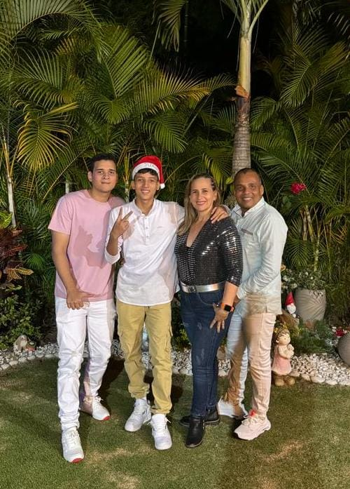
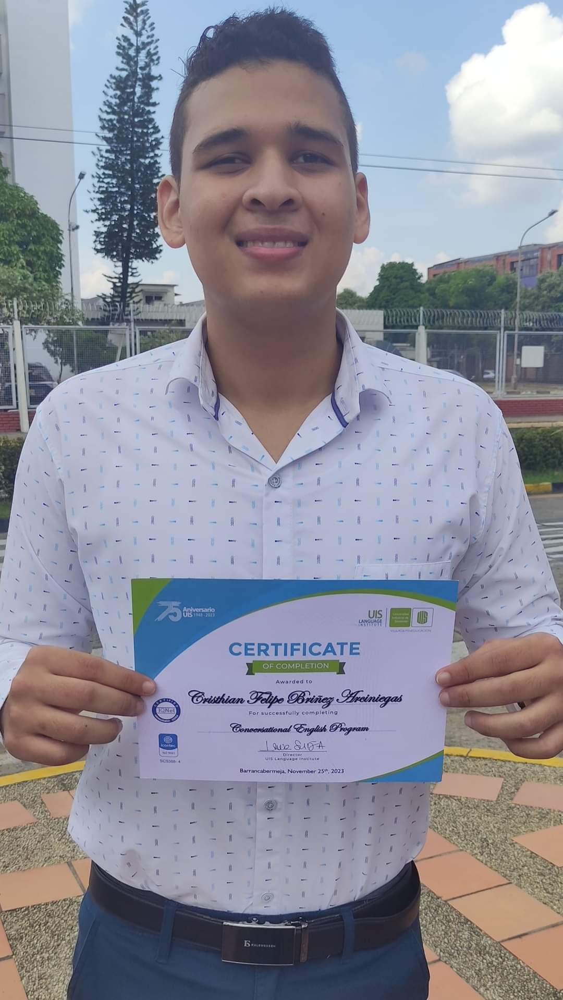
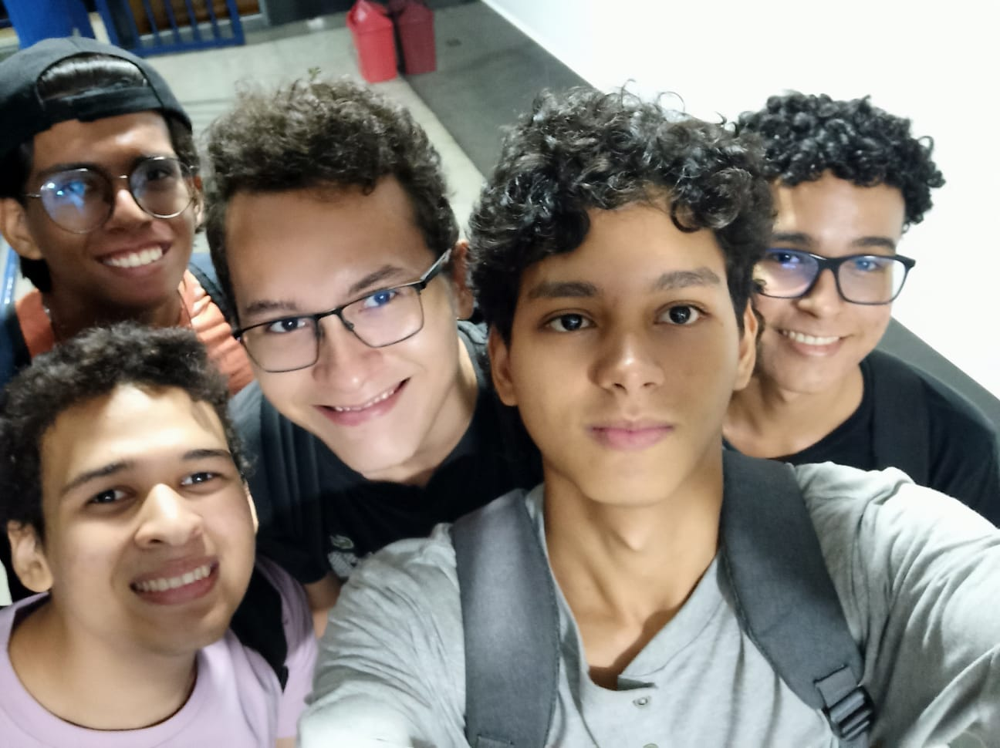

Mi Perfil
- Mi vida
- Mis amigos
- Contactanos

Mi vida
Bueno mi nombre es Cristhian Felipe Briñez Arciniegas, nací el 13 de Febrero del 2005 a las 3:12 de la mañana,
osea actualmente tengo 19 años, y pues mi vida ah sido plena desde siempre, vivo con mi Mamá Elis Irene Arciniegas Gomez,
mi papá Edinson Briñez Garnica y mi hermano Santiago Briñez Arciniegas, en este momento estoy en la universidad de
investigación y Desarrollo (UDI) en quinto semestre de ingeniería de sistemas (Materia que desde pequeño me ha interesado)
y pues me esta yendo bastante bien la verdad, actualmente tengo mi diploma donde demuestra que he completado mi curso de
inglés en la UIS, donde he completado los 12 niveles + el conversacional, mi comida favorita son las pastas con pollo,
y mi pasatiempo favorito es jugar videojuegos. Estudié en la Escuela Normal Superior Cristo Rey (E.N.S.C.R) donde hice
mi primaria, mi secundaria y de donde me gradué, en el colegio tuve muy pocos amigos, aunque eso no me molestó en absoluto
ya que aprendí a valerme por mi mismo, así que todo está bien.

Mis amigos
La universidad no solo me trajo conocimiento, también me trajo unos buenos compañeros de estudio o mejores amigos como podría decirles,
sus nombres son Juan David Cuadros Vega (Le decimos barnies por algo que paso en su vida), Jose David Bayona Cortez (Podría decirse que
es con quien más me llevo bien), Hamilton Cortez Perez (El único de nosotros que trabaja) y Juan Pablo Galvan Varela (El pequeño del grupo),
los conocí en el primer semestre de la Universidad, cuando estábamos en una clase y nos tocaba hacer grupo de 4 (Galvan no estaba en ese
momento con nosotros) y pues ese día Jose nos invitó a comer esa misma mañana, donde empezamos a compartir gustos y empezamos a llevarnos bien.
Cada uno de ellos tiene sus propias cualidades que nos hacen muy diferentes entre nosotros pero iguales al mismo tiempo, somos muy cercanos
podría decirse.

Contactanos
A continuación podrás diligenciar un Formulario para que puedas contactarte conmigo.